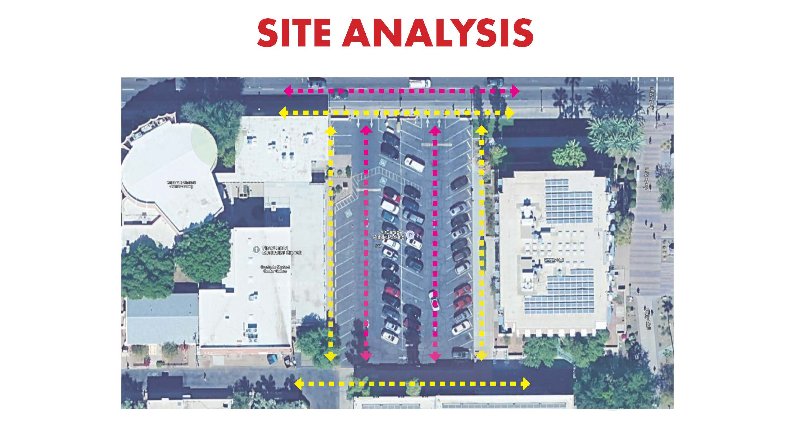
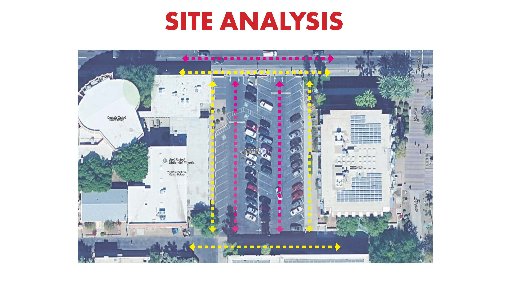

PROJECTS
Chill Space Re-Design Project
The focus of this project is to transform a small area on campus at Arizona State Univeristy into a relaxing space with emphasis on designing at the human scale, and giving special attention to the senses and perception of place, and focusing on the therapeutic nature of landscapes.
Grade Recieved: 69/70
Intro to Apps for Designers Final
This project focuses on using computer programs such as AutoCAD, Adobe Photoshop, Illustrator, InDesign, and SketchUp.
Grade Received: 185/200

Design Fundamentals III Final
The purpose of this project is to design a pocket park on the Arizona State University Campus, that is influenced by human-factors, research, and on-site analysis, that is ADA accessible, can accommodate a food truck, and has a water element.
Grade Received: 96/100
 

Design Fundamentals IV Final
This project focuses on the design process, designing at multiple scales, and hand rendering. The project consists of researching and assessing the site to be effective for a bird sanctuary, going through the design process, and designing at a master plan, site plan, and site design scale, and design an observation space.
Grade Received: 286/300